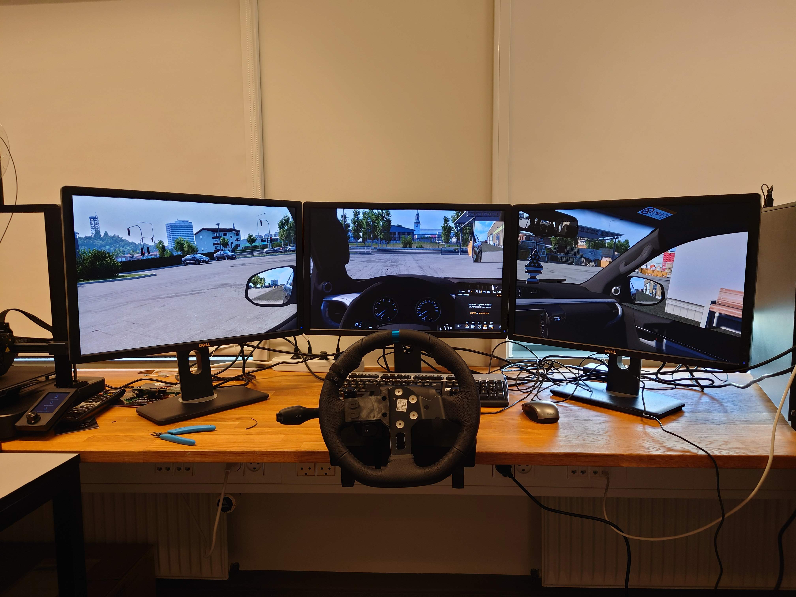

Masters Project - Indicating Change: Comparing Turn Signal Interfaces
A lab-based HCI study comparing four turn signal interfaces — a traditional stalk, Tesla-style steering wheel buttons, a VW inner-rim button concept, and a Citroën rocker switch.
Project Details / Background
With Tesla ditching the classic stalk in favour of steering wheel buttons, we wanted to know: is that actually a good idea? We ran a study comparing four turn signal interfaces: the traditional stalk, Tesla-style buttons, a VW inner-rim concept, and a retro Citroën rocker switch. To see how each one held up under real driving conditions.
We built custom 3D-printed prototypes of each interface, rigged them up to a driving simulator via Arduino, and had 20 participants drive through a series of routes including roundabouts (the true stress test). While they drove, we tracked exactly where their eyes were going using Tobii Pro eye-tracking glasses, and followed up with usability questionnaires and interviews.
The results were pretty clear: the stalk won by a lot. It scored 95/100 on usability versus around 60 to 70 for the alternatives, and drivers barely had to glance away from the road to use it. The Tesla and VW buttons struggled most in roundabouts, where the rotating wheel meant the buttons were never quite where drivers expected them. The Citroën interface was a mixed bag, with some people loving the familiar placement and others finding it awkward.
The study sits at the intersection of HCI, automotive design, and road safety, and raises a broader question the industry is only beginning to grapple with: when does "modern" start working against the driver?
Image Gallery

Here the simulator setup is pictured
Small video showing the setup in action